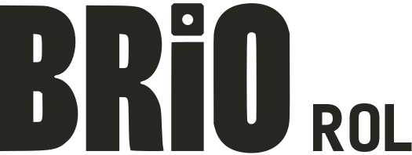
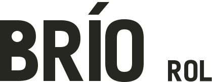
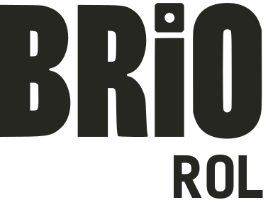

Continuidad, con jerarquía.
Dirección recomendada
Se conserva el carácter de Brío. ROL se dibuja a un tercio de su altura y se alinea con su base, con una separación clara entre palabras.
Brío Rol · Estudio del logotipo
Propuestas de dibujo / 01
Se conserva el carácter de Brío. ROL se dibuja a un tercio de su altura y se alinea con su base, con una separación clara entre palabras.

Mejora la apertura de las letras, pero su regularidad hace el nombre más genérico. No ofrece una mejora suficiente para sustituir el dibujo original.
Un signo derivado de una letra, no un dado aislado.

La B se extrae del dibujo original. Para usos pequeños se abren sus dos contraformas: el contorno exterior sigue siendo el mismo. La firma completa identifica el nombre cuando no hay contexto previo.
El dibujo debe sostenerse sin color, textura ni ilustración.

La versión reducida no intenta meter el nombre completo en un favicon.
A 120 px se mantiene la lectura de ROL y las contraformas de Brío. Se prefiere 160 px o más para dar presencia al dibujo; por debajo se usa la inicial ajustada cuando el contexto identifica la marca.

El mismo peso en las dos palabras alarga la masa. Repetir R y O no construye una jerarquía; la L añadida cambia el lenguaje del dibujo.
El nombre se lee en dos niveles. ROL se subordina a Brío; la separación entre palabras queda clara. El signo reducido procede del dibujo original, no de un dado aislado.